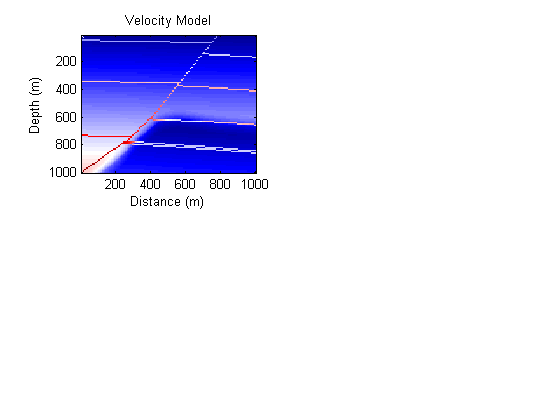
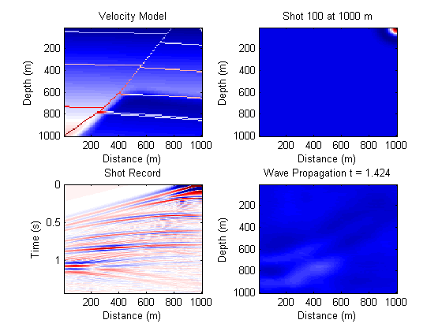
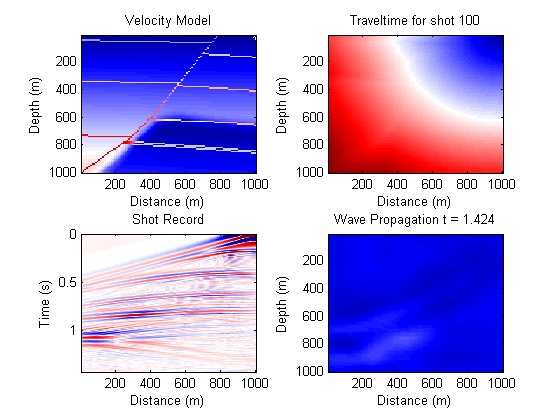
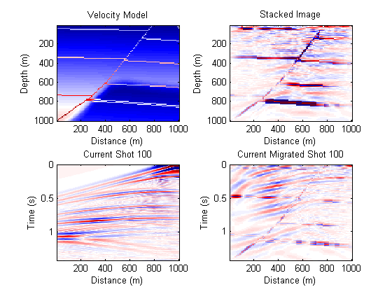

Seismic Migration Example - Fault Model
Contents
Data source
This example is derived from Gerard Schuster's MATLAB example and book Seismic Interferometry
addpath faultModelData addpath migration
Read in velocity model data and plot it
load velocityModel [nz,nx] = size(velocityModel); dx = 10; dz = 10; x = (1:nx)*dx; z = (1:nz)*dz; subplot(2,2,1) imagesc(x,z,velocityModel) xlabel('Distance (m)'); ylabel('Depth (m)'); title('Velocity Model'); hold on hshot = plot(x(1),z(1),'w*'); hold off colormap(seismic)
Create shot gathers
Use the velocity model to simulate a seismic survey. The wave equations is solved using finite differences for a defined initial wavefield.
% calculate time step dt from stability crierion for finite difference % solution of the wave equation. dt = 0.9*min(min(dz./velocityModel/sqrt(2))); % determine time samples nt from wave travelime to depth and back to % surface vmin = min(velocityModel(:)); nt = round(sqrt((dx*nx)^2 + (dz*nx)^2)*2/vmin/dt + 1); t = (0:nt-1).*dt; % add region around model for applying absorbing boundary conditions (20 % nodes wide) V = [repmat(velocityModel(:,1),1,20) velocityModel repmat(velocityModel(:,end),1,20)]; V(end+1:end+20,:) = repmat(V(end,:),20,1); % Define frequency parameter for ricker wavelet f = 20;
Generate shots and save to file and video
%vidObj = VideoWriter('FaultModelShots.avi'); %open(vidObj); data = zeros(size(nt,nx)); figure(gcf) for ixs = 21:nx+20 % shot loop % initial wavefield rw = ricker(f,nz+40,dt,dt*ixs,0); rw = rw(1:nz+20,:); % plot initial wavefield set(hshot,'XData',x(ixs-20),'YData',z(1)); subplot(2,2,2) imagesc(x,z,rw(1:end-20,21:end-20)) xlabel('Distance (m)'); ylabel('Depth (m)'); title(['Shot ',num2str(ixs-20),' at ',num2str(x(ixs-20)),' m']); colormap(seismic) % generate shot record tic [data snapshot] = fm2d(V,rw,nz,dz,nx,dx,nt,dt); toc %save(['faultModelData\snapshot',num2str(ixs-20),'.mat'],'snapshot'); %save(['faultModelData\shotfdm',num2str(ixs-20),'.mat'],'data') data = data(21:end-20,:)'; if ismember(ixs-20,[1 nx/2 nx]) start = 1; else start = nt; end for i = start:nt % plot shot record evolution ds = zeros(nt,nx); ds(1:i,:) = data(1:i,:); subplot(2,2,3) imagesc(x,t,ds) xlabel('Distance (m)'), ylabel('Time (s)') title('Shot Record') caxis([-0.1 0.1]) % plot wave propagation subplot(2,2,4) imagesc(x,z,snapshot(1:end-20,21:end-20,i)) xlabel('Distance (m)'), ylabel('Depth (m)') title(['Wave Propagation t = ',num2str(t(i),'%10.3f')]) caxis([-0.14 1]) %writeVideo(vidObj,getframe(gcf)); drawnow; end %shot loop end %close(vidObj);
Elapsed time is 0.901365 seconds. Elapsed time is 0.877529 seconds. Elapsed time is 0.871672 seconds. Elapsed time is 0.895562 seconds. Elapsed time is 0.874237 seconds. Elapsed time is 0.875485 seconds. Elapsed time is 0.876973 seconds. Elapsed time is 0.885910 seconds. Elapsed time is 0.878786 seconds. Elapsed time is 0.881110 seconds. Elapsed time is 0.890334 seconds. Elapsed time is 0.896181 seconds. Elapsed time is 0.883709 seconds. Elapsed time is 0.895575 seconds. Elapsed time is 0.883182 seconds. Elapsed time is 0.884291 seconds. Elapsed time is 0.894380 seconds. Elapsed time is 0.901059 seconds. Elapsed time is 0.894866 seconds. Elapsed time is 0.880693 seconds. Elapsed time is 0.884996 seconds. Elapsed time is 0.877301 seconds. Elapsed time is 0.884057 seconds. Elapsed time is 0.893726 seconds. Elapsed time is 0.895352 seconds. Elapsed time is 0.896944 seconds. Elapsed time is 0.886618 seconds. Elapsed time is 0.891435 seconds. Elapsed time is 0.891473 seconds. Elapsed time is 0.903760 seconds. Elapsed time is 0.886333 seconds. Elapsed time is 0.897131 seconds. Elapsed time is 0.890326 seconds. Elapsed time is 0.890605 seconds. Elapsed time is 0.885922 seconds. Elapsed time is 0.907803 seconds. Elapsed time is 0.891416 seconds. Elapsed time is 0.889571 seconds. Elapsed time is 0.889196 seconds. Elapsed time is 0.886579 seconds. Elapsed time is 0.903450 seconds. Elapsed time is 0.887048 seconds. Elapsed time is 0.898665 seconds. Elapsed time is 0.909664 seconds. Elapsed time is 0.884725 seconds. Elapsed time is 0.904097 seconds. Elapsed time is 0.889030 seconds. Elapsed time is 0.893694 seconds. Elapsed time is 0.899832 seconds. Elapsed time is 0.894539 seconds. Elapsed time is 1.079118 seconds. Elapsed time is 1.007447 seconds. Elapsed time is 0.933447 seconds. Elapsed time is 0.932365 seconds. Elapsed time is 0.973799 seconds. Elapsed time is 0.917222 seconds. Elapsed time is 0.961039 seconds. Elapsed time is 0.959382 seconds. Elapsed time is 0.919500 seconds. Elapsed time is 0.912323 seconds. Elapsed time is 0.928517 seconds. Elapsed time is 0.909603 seconds. Elapsed time is 0.908002 seconds. Elapsed time is 0.981938 seconds. Elapsed time is 0.908124 seconds. Elapsed time is 0.953121 seconds. Elapsed time is 0.913842 seconds. Elapsed time is 0.907896 seconds. Elapsed time is 0.924434 seconds. Elapsed time is 0.927575 seconds. Elapsed time is 0.918454 seconds. Elapsed time is 0.914170 seconds. Elapsed time is 0.958779 seconds. Elapsed time is 0.945455 seconds. Elapsed time is 0.938361 seconds. Elapsed time is 0.969002 seconds. Elapsed time is 0.948351 seconds. Elapsed time is 0.921956 seconds. Elapsed time is 0.905914 seconds. Elapsed time is 0.912221 seconds. Elapsed time is 0.899151 seconds. Elapsed time is 0.943570 seconds. Elapsed time is 0.945455 seconds. Elapsed time is 0.964626 seconds. Elapsed time is 0.976297 seconds. Elapsed time is 0.915941 seconds. Elapsed time is 0.923027 seconds. Elapsed time is 0.932028 seconds. Elapsed time is 0.918779 seconds. Elapsed time is 0.917758 seconds. Elapsed time is 0.943895 seconds. Elapsed time is 0.897897 seconds. Elapsed time is 0.983863 seconds. Elapsed time is 0.940295 seconds. Elapsed time is 0.926348 seconds. Elapsed time is 0.915504 seconds. Elapsed time is 0.952319 seconds. Elapsed time is 0.937019 seconds. Elapsed time is 0.927670 seconds. Elapsed time is 0.900824 seconds.
Traveltime by 2D ray-tracing
Generate the traveltime field for all z = 0 locations
%vidObj = VideoWriter('FaultModelTravelTime.avi'); %open(vidObj); travelTime = zeros(nz,nx,nx); subplot(2,2,2) for ixs = 1:nx travelTime(:,:,ixs) = ray2d(velocityModel,[1 ixs],dx); imagesc(x,z,travelTime(:,:,ixs)) xlabel('Distance (m)'), ylabel('Depth (m)') title(['Traveltime for shot ',num2str(ixs)]) set(hshot,'XData',x(ixs)); drawnow %writeVideo(vidObj,getframe(gcf)); end %close(vidObj) %save results for later re-use %save('faultModelData\travelTime.mat', 'travelTime')
Process Shots - Kirchhoff Migration
%vidObj = VideoWriter('FaultModelKirchhoff.avi'); %open(vidObj); load('travelTime.mat'); Stacked = zeros(nz,nx); figure(gcf) colormap seismic %bone for ixs = 1:nx load(['shotfdm',num2str(ixs),'.mat']) shot = data(21:end-20,:)'; M = migrate(travelTime,shot,dt,nz,ixs,nx); Stacked = Stacked + M; subplot(2,2,2) imagesc(x,z,Stacked) xlabel('Distance (m)'); ylabel('Depth (m)'); title('Stacked Image'); caxis([-135 135]) subplot(2,2,3) imagesc(x,t,shot) xlabel('Distance (m)'); ylabel('Time (s)'); title(['Current Shot ',num2str(ixs)]); caxis([-0.1 0.1]) subplot(2,2,4) imagesc(x,t,M) xlabel('Distance (m)'); ylabel('Time (s)'); title(['Current Migrated Shot ',num2str(ixs)]); caxis([-5 5]) set(hshot,'XData',x(ixs)); drawnow %writeVideo(vidObj,getframe(gcf)); end %close(vidObj);
Elapsed time is 0.281017 seconds. Elapsed time is 0.077068 seconds. Elapsed time is 0.065901 seconds. Elapsed time is 0.070564 seconds. Elapsed time is 0.067564 seconds. Elapsed time is 0.065560 seconds. Elapsed time is 0.067056 seconds. Elapsed time is 0.068440 seconds. Elapsed time is 0.066676 seconds. Elapsed time is 0.064816 seconds. Elapsed time is 0.064440 seconds. Elapsed time is 0.065506 seconds. Elapsed time is 0.064820 seconds. Elapsed time is 0.069364 seconds. Elapsed time is 0.066662 seconds. Elapsed time is 0.064421 seconds. Elapsed time is 0.066679 seconds. Elapsed time is 0.065347 seconds. Elapsed time is 0.064771 seconds. Elapsed time is 0.068045 seconds. Elapsed time is 0.064569 seconds. Elapsed time is 0.065655 seconds. Elapsed time is 0.066210 seconds. Elapsed time is 0.064700 seconds. Elapsed time is 0.063511 seconds. Elapsed time is 0.065199 seconds. Elapsed time is 0.066326 seconds. Elapsed time is 0.067358 seconds. Elapsed time is 0.066870 seconds. Elapsed time is 0.066375 seconds. Elapsed time is 0.067501 seconds. Elapsed time is 0.064848 seconds. Elapsed time is 0.065617 seconds. Elapsed time is 0.066372 seconds. Elapsed time is 0.064349 seconds. Elapsed time is 0.064333 seconds. Elapsed time is 0.069016 seconds. Elapsed time is 0.066540 seconds. Elapsed time is 0.067282 seconds. Elapsed time is 0.065503 seconds. Elapsed time is 0.073548 seconds. Elapsed time is 0.079091 seconds. Elapsed time is 0.078185 seconds. Elapsed time is 0.082903 seconds. Elapsed time is 0.089291 seconds. Elapsed time is 0.086998 seconds. Elapsed time is 0.080654 seconds. Elapsed time is 0.082782 seconds. Elapsed time is 0.083305 seconds. Elapsed time is 0.084211 seconds. Elapsed time is 0.071723 seconds. Elapsed time is 0.064946 seconds. Elapsed time is 0.067366 seconds. Elapsed time is 0.078364 seconds. Elapsed time is 0.066608 seconds. Elapsed time is 0.066576 seconds. Elapsed time is 0.065103 seconds. Elapsed time is 0.070691 seconds. Elapsed time is 0.069772 seconds. Elapsed time is 0.069321 seconds. Elapsed time is 0.084502 seconds. Elapsed time is 0.077828 seconds. Elapsed time is 0.065592 seconds. Elapsed time is 0.067409 seconds. Elapsed time is 0.066637 seconds. Elapsed time is 0.069387 seconds. Elapsed time is 0.070642 seconds. Elapsed time is 0.064671 seconds. Elapsed time is 0.076669 seconds. Elapsed time is 0.072571 seconds. Elapsed time is 0.069268 seconds. Elapsed time is 0.075190 seconds. Elapsed time is 0.069808 seconds. Elapsed time is 0.072793 seconds. Elapsed time is 0.063945 seconds. Elapsed time is 0.069586 seconds. Elapsed time is 0.071392 seconds. Elapsed time is 0.065562 seconds. Elapsed time is 0.078040 seconds. Elapsed time is 0.078004 seconds. Elapsed time is 0.069418 seconds. Elapsed time is 0.075459 seconds. Elapsed time is 0.073288 seconds. Elapsed time is 0.067037 seconds. Elapsed time is 0.067490 seconds. Elapsed time is 0.072752 seconds. Elapsed time is 0.073917 seconds. Elapsed time is 0.090181 seconds. Elapsed time is 0.087416 seconds. Elapsed time is 0.080517 seconds. Elapsed time is 0.073612 seconds. Elapsed time is 0.073095 seconds. Elapsed time is 0.074425 seconds. Elapsed time is 0.073770 seconds. Elapsed time is 0.070996 seconds. Elapsed time is 0.067495 seconds. Elapsed time is 0.071911 seconds. Elapsed time is 0.075557 seconds. Elapsed time is 0.095243 seconds. Elapsed time is 0.088593 seconds.

Process Shots - Reverse Time Migration
%vidObj = VideoWriter('FaultModelRTM.avi'); %open(vidObj); Stacked = zeros(nz+20,nx+40); colormap seismic %bone for ixs = 1:nx load(['shotfdm',num2str(ixs),'.mat']) shot = data(21:end-20,:)'; tic [~, rtmsnapshot] = rtm2d(V,data,nz,dz,nx,dx,nt,dt); toc %save(['faultModelData\rtmsnapshot',num2str(ixs),'.mat'],'rtmsnapshot'); load(['snapshot',num2str(ixs),'.mat']); M = 0; s2 = 0; for i = 1:nt M = snapshot(:,:,i).*rtmsnapshot(:,:,nt-i+1)+M; s2 = snapshot(:,:,i).^2+s2; if ismember(ixs,[1 nx/2 nx]) subplot(2,2,3) imagesc(x,z,snapshot(1:end-20,21:end-20,i)) xlabel('Distance (m)'); ylabel('Depth (m)'); title(['Forward Time Wave Propagation t = ',num2str(t(i),'%10.3f')]) caxis([-0.14 1]) subplot(2,2,4) imagesc(x,z,rtmsnapshot(1:end-20,21:end-20,nt-i+1)) xlabel('Distance (m)'); ylabel('Depth (m)'); title('Reverse Time Wave Propagation') caxis([-0.14 1]) subplot(2,2,2) imagesc(x,z,diff(M(1:end-20,21:end-20)./s2(1:end-20,21:end-20),2,1)) xlabel('Distance (m)'); ylabel('Depth (m)'); title(['Current Migrated Shot ',num2str(ixs)]); caxis([-.05 .05]) drawnow %writeVideo(vidObj,getframe(gcf)); end end Stacked = Stacked + M; subplot(2,2,2) imagesc(x,z,diff(Stacked(1:end-20,21:end-20),2,1)) xlabel('Distance (m)'); ylabel('Depth (m)'); title('Stacked Image'); caxis([-30 30]) subplot(2,2,3) imagesc(x,t,shot) xlabel('Distance (m)'); ylabel('Time (s)'); title(['Current Shot ',num2str(ixs)]); caxis([-0.1 0.1]) subplot(2,2,4) imagesc(x,t,diff(M(1:end-20,21:end-20),2,1)) xlabel('Distance (m)'); ylabel('Time (s)'); title(['Current Migrated Shot ',num2str(ixs)]); caxis([-1 1]) set(hshot,'XData',x(ixs)); drawnow %writeVideo(vidObj,getframe(gcf)); end %close(vidObj);
Elapsed time is 2.300806 seconds. Elapsed time is 2.173311 seconds. Elapsed time is 2.045622 seconds. Elapsed time is 2.081185 seconds. Elapsed time is 2.017608 seconds. Elapsed time is 2.031562 seconds. Elapsed time is 2.055837 seconds. Elapsed time is 2.016272 seconds. Elapsed time is 2.015963 seconds. Elapsed time is 2.091142 seconds. Elapsed time is 2.105110 seconds. Elapsed time is 1.992261 seconds. Elapsed time is 2.050758 seconds. Elapsed time is 2.066210 seconds. Elapsed time is 2.029704 seconds. Elapsed time is 1.981750 seconds. Elapsed time is 2.009277 seconds. Elapsed time is 2.070813 seconds. Elapsed time is 2.032866 seconds. Elapsed time is 2.017272 seconds. Elapsed time is 1.993894 seconds. Elapsed time is 2.015943 seconds. Elapsed time is 2.041933 seconds. Elapsed time is 2.034578 seconds. Elapsed time is 2.046284 seconds. Elapsed time is 2.040471 seconds. Elapsed time is 2.027102 seconds. Elapsed time is 2.045207 seconds. Elapsed time is 2.041165 seconds. Elapsed time is 2.033861 seconds. Elapsed time is 2.041455 seconds. Elapsed time is 2.041335 seconds. Elapsed time is 2.030094 seconds. Elapsed time is 2.413011 seconds. Elapsed time is 2.181003 seconds. Elapsed time is 2.199990 seconds. Elapsed time is 2.138837 seconds. Elapsed time is 2.294760 seconds. Elapsed time is 2.133813 seconds. Elapsed time is 1.998599 seconds. Elapsed time is 1.985597 seconds. Elapsed time is 1.996597 seconds. Elapsed time is 1.989808 seconds. Elapsed time is 2.018021 seconds. Elapsed time is 2.016970 seconds. Elapsed time is 2.005435 seconds. Elapsed time is 2.000149 seconds. Elapsed time is 2.046307 seconds. Elapsed time is 2.019148 seconds. Elapsed time is 2.021406 seconds. Elapsed time is 1.977861 seconds. Elapsed time is 2.004345 seconds. Elapsed time is 2.036584 seconds. Elapsed time is 2.033802 seconds. Elapsed time is 2.024980 seconds. Elapsed time is 1.991561 seconds. Elapsed time is 2.007186 seconds. Elapsed time is 2.015764 seconds. Elapsed time is 2.064001 seconds. Elapsed time is 2.017825 seconds. Elapsed time is 2.046532 seconds. Elapsed time is 2.061465 seconds. Elapsed time is 2.035680 seconds. Elapsed time is 2.050871 seconds. Elapsed time is 2.015691 seconds. Elapsed time is 2.016785 seconds. Elapsed time is 2.026068 seconds. Elapsed time is 2.041749 seconds. Elapsed time is 2.045621 seconds. Elapsed time is 2.095800 seconds. Elapsed time is 2.103834 seconds. Elapsed time is 2.078646 seconds. Elapsed time is 2.059170 seconds. Elapsed time is 2.075476 seconds. Elapsed time is 2.049962 seconds. Elapsed time is 2.064297 seconds. Elapsed time is 2.046753 seconds. Elapsed time is 2.033184 seconds. Elapsed time is 2.061035 seconds. Elapsed time is 2.075709 seconds. Elapsed time is 2.048094 seconds. Elapsed time is 2.079072 seconds. Elapsed time is 2.056462 seconds. Elapsed time is 2.051238 seconds. Elapsed time is 2.044907 seconds. Elapsed time is 2.053106 seconds. Elapsed time is 2.068068 seconds. Elapsed time is 2.032868 seconds. Elapsed time is 2.044621 seconds. Elapsed time is 2.039552 seconds. Elapsed time is 2.034832 seconds. Elapsed time is 2.028402 seconds. Elapsed time is 2.056887 seconds. Elapsed time is 2.020875 seconds. Elapsed time is 2.032847 seconds. Elapsed time is 2.041836 seconds. Elapsed time is 2.043967 seconds. Elapsed time is 2.026142 seconds. Elapsed time is 2.032159 seconds. Elapsed time is 2.025502 seconds.